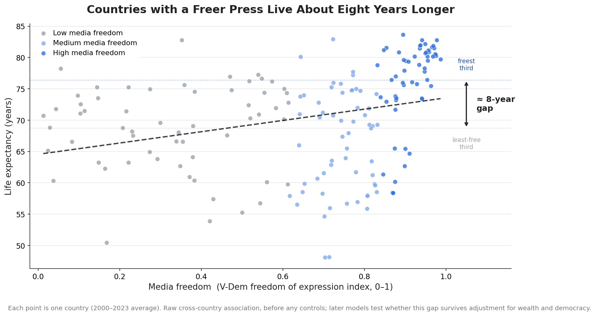
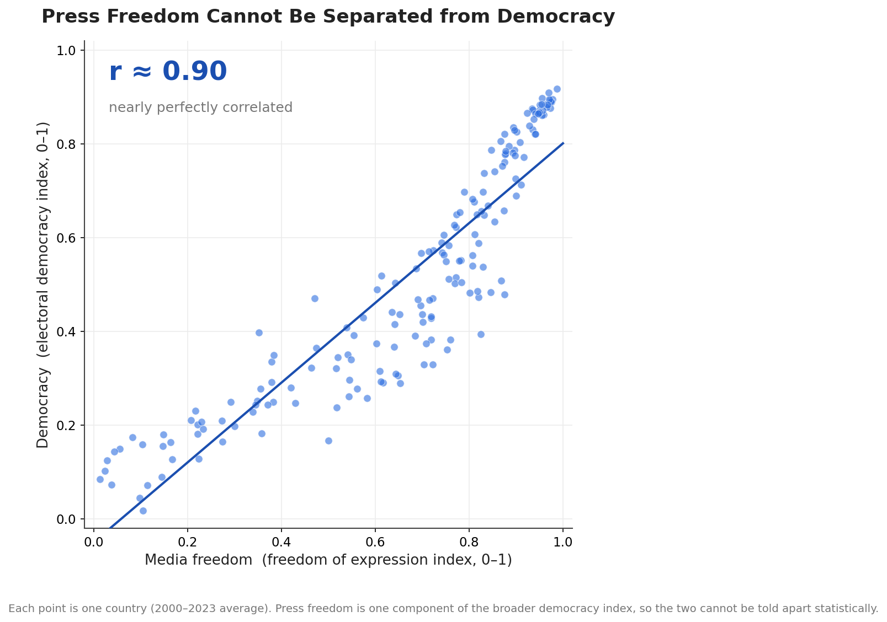
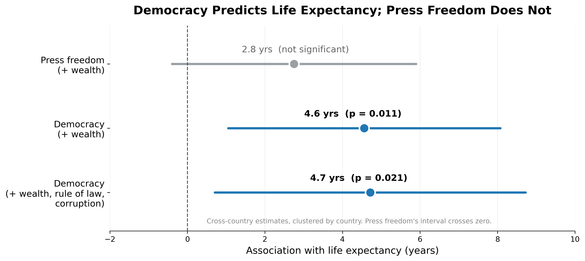

The Question
Countries with free press tend to live longer. But is that because media freedom itself improves health, or because press freedom travels with other things, like wealth and democracy, that improve health?
Does media freedom independently predict population health, or is the apparent relationship explained by wealth and broader democratic governance?
A free press could plausibly improve health by holding governments accountable, exposing corruption, and spreading public health information. This project starts with a striking raw correlation and then stress-tests it step by step. The conclusion is not the one I expected: once wealth and overall democracy are accounted for, press freedom's independent effect disappears. Press freedom appears to be a marker of broader democratic governance, not an independent predictor of population health.
Data and Methods
Two major cross-national datasets were merged at the country-year level and cleaned into a country-year panel suitable for cross-country and panel regression.
Media freedom, democracy, life expectancy, GDP, rule of law, corruption
Health expenditure per capita
Findings
The 8.2-year gap is mostly driven by wealth
8.2 yr raw gap Wealth confoundedIn a simple cross-country comparison, countries with the most media freedom live 8.2 years longer on average than countries with the least. It is a large difference, and the intuitive reading is that a free press must itself be improving health.
The plot below shows that relationship directly. Each dot is a country: those with the freest presses (in blue) sit noticeably higher than those with the least (in gray), and the freest third of countries average about eight more years of life than the least-free third.
But a raw gap like this is easy to misread. Countries with freer presses also tend to be wealthier, more democratic, and to spend more on health, and each of those independently improves life expectancy. The rest of this project stress-tests the gap to see how much of it, if any, survives once those factors are accounted for. The formal test begins in Finding 02, where adding wealth as a control directly shrinks the media freedom effect.

The effect of media freedom shrinks as controls are added
8.2 to 1.2 years ConfoundingFour regression models were run, each adding another control. Media freedom's apparent effect falls from about 8.2 years on its own to roughly 2.8 years once wealth is accounted for, already no longer statistically significant, and it keeps shrinking as health spending, rule of law, and civil society repression are added, down to about 1.2 years in the full model.
This confirms the pattern from the scatter plots: the raw association between media freedom and life expectancy is largely explained by wealth. To find out whether media freedom has any independent effect, we need a more rigorous approach.

On its own, press freedom barely registers, and it cannot be separated from democracy
Marginal at best r = 0.90 with democracyWith wealth accounted for and standard errors clustered by country, press freedom on its own is only marginally associated with life expectancy (about 2.8 years, not statistically significant). The raw cross-country gap looked dramatic, but once income is controlled the independent press freedom signal is weak.
There is also a deeper, structural problem. Press freedom and overall democracy are correlated at about 0.90, because press freedom is one component of the broader democracy index. As the plot below shows, the two move almost in lockstep: a country that scores high on one scores high on the other. They are empirically inseparable, so press freedom cannot be isolated as a predictor distinct from the democratic system it belongs to.
The question then becomes which measure holds up on its own, and that is the subject of Finding 04.

Democracy is the institutional factor that holds up
~4.7 years, p = 0.02 RobustWhen each measure is tested on its own across countries, with clustered standard errors, the contrast is clear. Press freedom is marginal and its confidence interval crosses zero. Democracy, by contrast, is associated with about 4.7 more years of life expectancy, and the estimate barely moves when wealth, rule of law, and control of corruption are all added as controls (p = 0.02).
Taken together, these results point to democracy, rather than press freedom, as the institutional factor associated with population health. Once press freedom is separated from the broader system it carries little independent signal, whereas democracy holds up across a demanding set of controls. Press freedom appears to matter largely because it travels with democratic governance, and it is that wider system, rather than the press alone, that tracks with how long people live.
These are cross-country associations, so they cannot rule out unobserved differences between countries such as history, culture, or state capacity. Within-country panel estimates point in the same direction but are too imprecise to confirm, because democracy changes slowly within a country. The cross-country evidence is the more reliable of the two here, but it remains associational rather than causal.

Explore the Data
Toggle between media freedom, life expectancy, censorship, and civil society scores across 170+ countries.
🌍 Open Interactive MapOnce wealth and democracy are taken into account, it is democratic governance, rather than press freedom on its own, that tracks with how long people live.
The raw correlation is striking, with freer-press countries living about eight years longer, but most of that gap reflects differences in wealth rather than the press itself. On its own, press freedom is only marginally associated with life expectancy, and because it is one component of the broader democracy index, it cannot be cleanly separated from the democratic system it belongs to. What does hold up across countries is democracy itself, which is associated with about 4.7 more years of life expectancy even after accounting for wealth, rule of law, and corruption. Press freedom appears to be more a marker of that broader democratic system than an independent driver of population health.